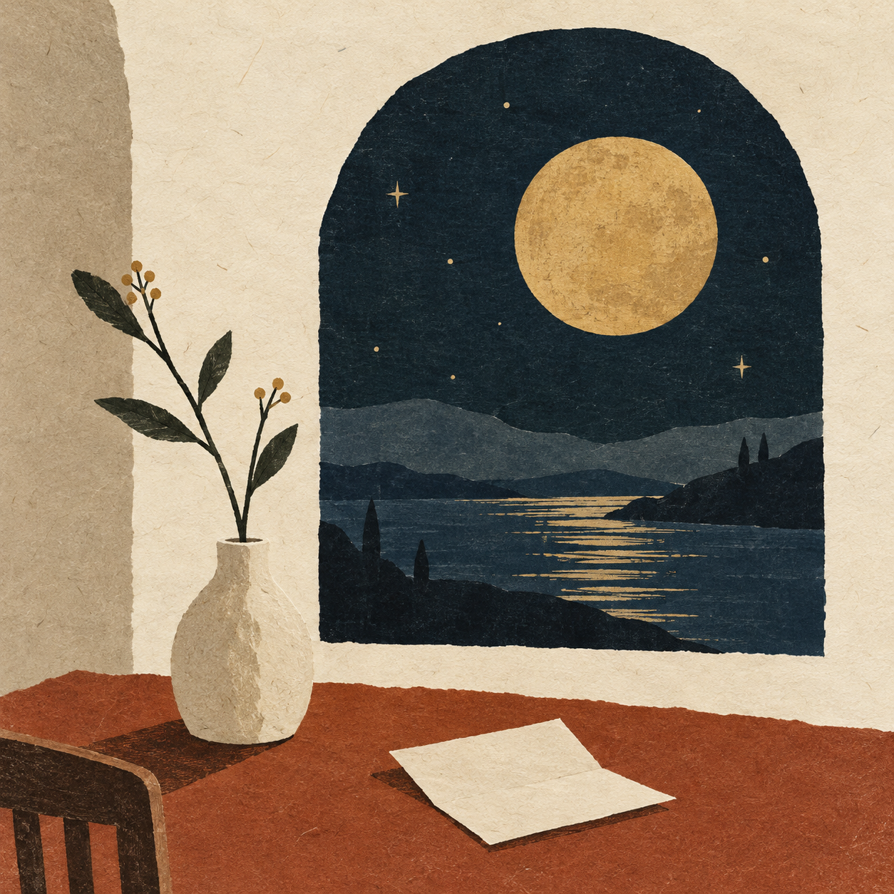

Poems, music & small things
A little roomfor the thingswe feel.
Poems, quiet songs, and other small things worth keeping. Pull up a chair. Stay a little.
A corner of the internet, made for slowing down.

01 / The notebook
A few things,
put into words.
For the ordinary days.
And everything underneath them.
No pages found for that.
02 / The listening corner
Something
for the quiet.
A few notes, a little space.
Best enjoyed with nowhere to be.
Daydreaming encouraged.
New sounds are on their way.
Come back for a listen soon.
03 / The person behind the pages
Hello,
fellow wanderer.
A space for the things I make.
And the things that make me.
This is a small home for poems and music — for paying attention, making a little sense of things, and leaving a few beautiful things behind.
Some days arrive as a line in a notebook. Others as a melody that won't quite let go. This is where they get to live.
Your name
Thanks for spending
a little of your time here.